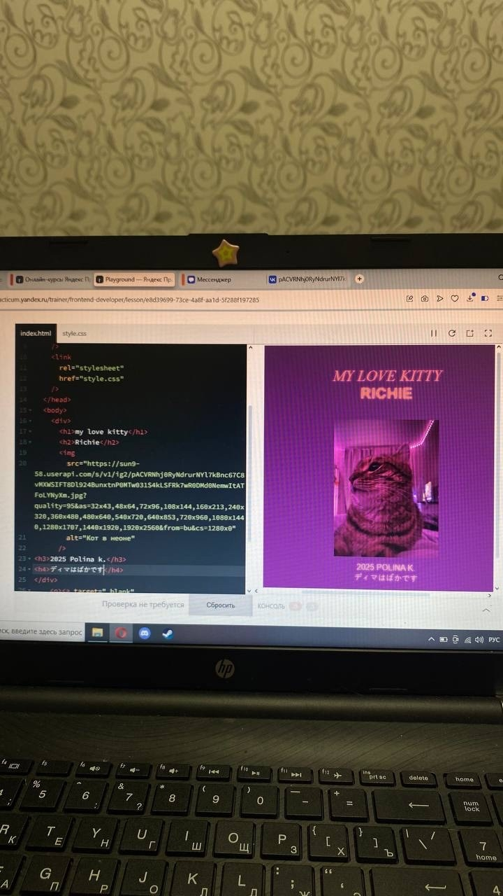
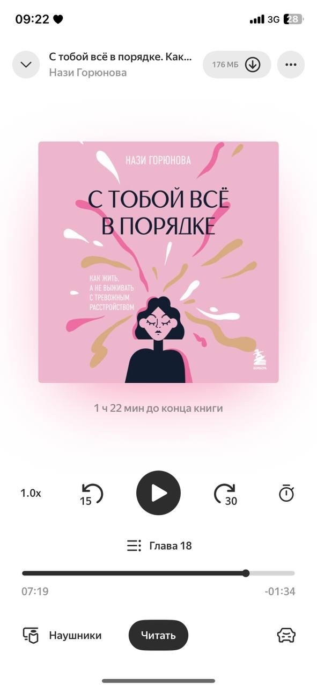
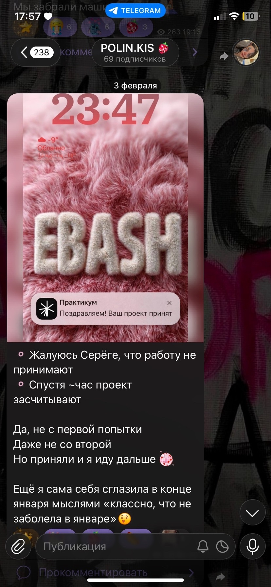
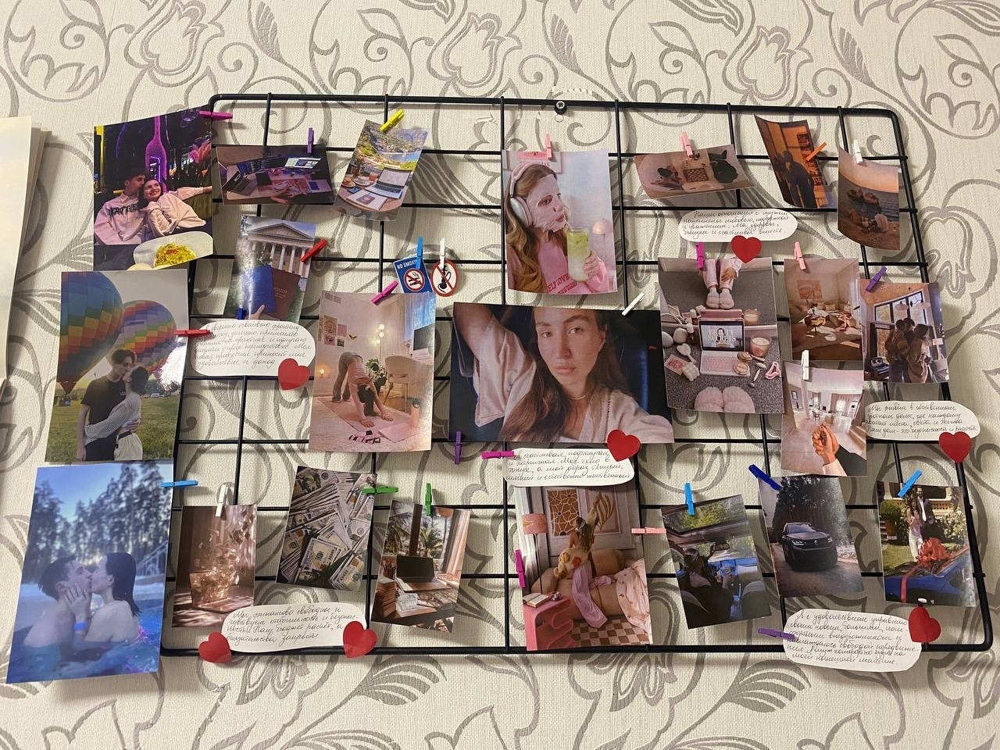
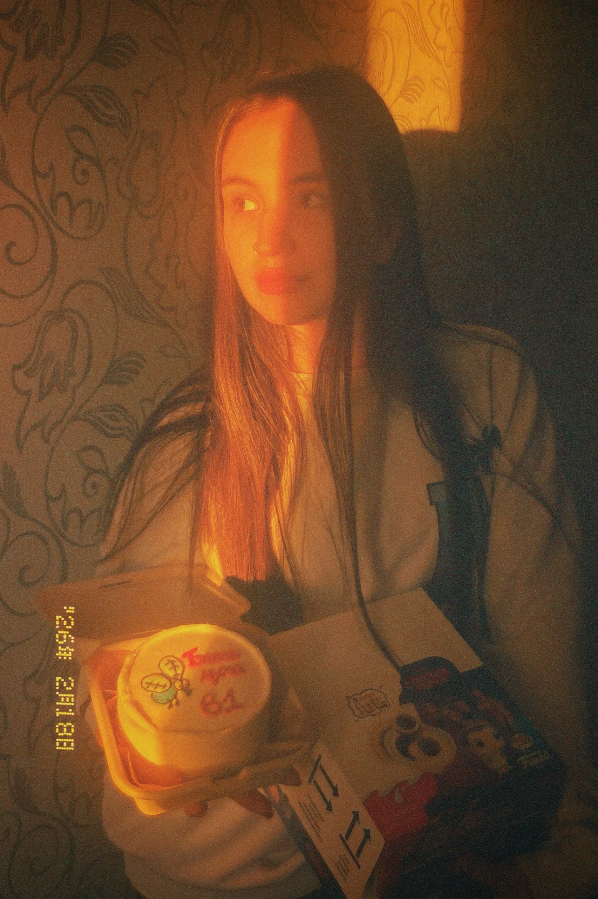
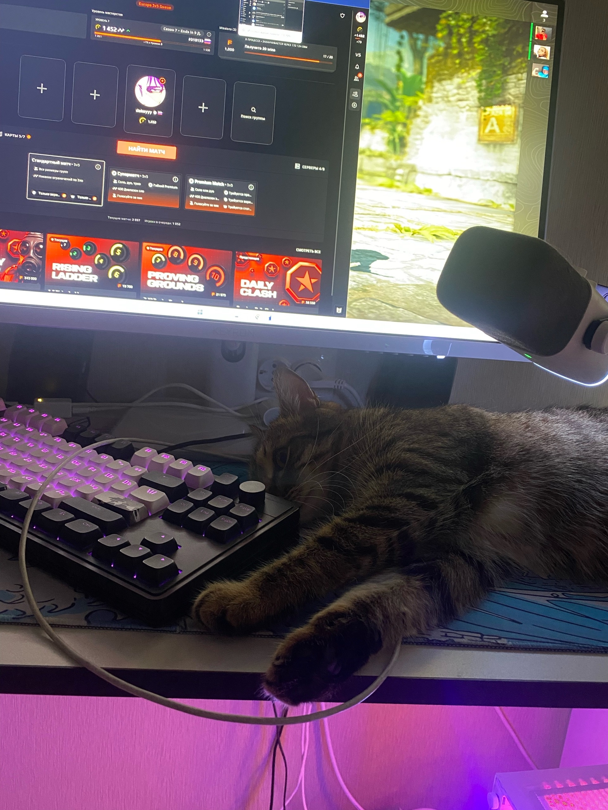
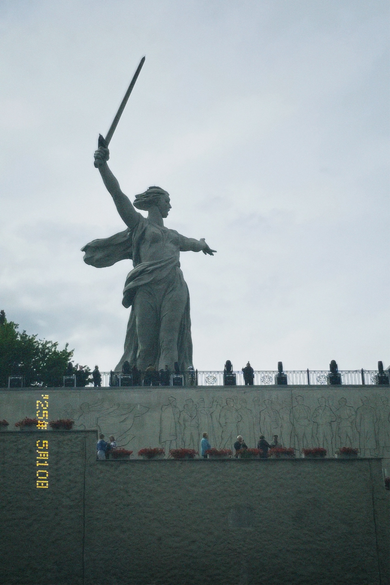
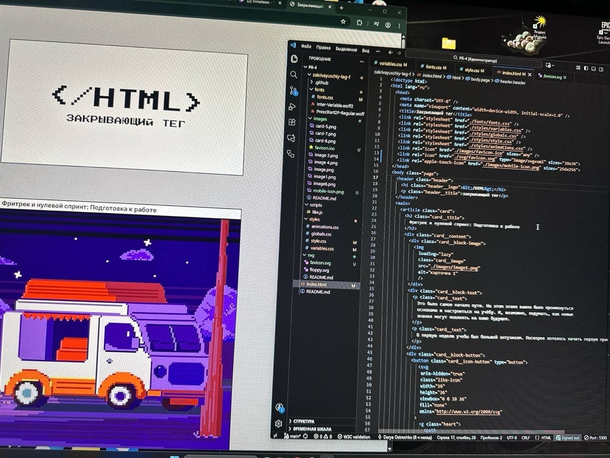

Фритрек и нулевой спринт: Подготовка к работе

</HTML>Это было самое начало пути. На этом этапе важно было проникнуться основами и настроиться на учёбу. И, возможно, подумать, как новые знания могут повлиять на ваше будущее.
Спустя целый год мечтаний я наконец нажала заветную кнопку «оплатить» и сделала первый шаг. Это обучение — мой долгожданный подарок самой себе и начало новой главы.
1 спринт: Я — чистый лист

</BOOK>На первых этапах мы работали со страхами и сомнениями, которые часто испытывают новички. Один из них — страх перед чистым листом. Это, конечно же, намного сложнее, чем боязнь куска бумаги. Часто за этим ощущением скрываются более глубокие вопросы: с чего начать? а вдруг будет слишком сложно? что, если я не справлюсь?
Когда мозг отказывался принимать информацию, я искала спасение в уютных голосах аудиокниг. Этот ритуал стал моим личным островком спокойствия среди шквала новых терминов и задач.
1 спринт: А если не получится?

</HAPPY>Это было самое начало пути. На этом этапе важно было проникнуться основами и настроиться на учёбу. И, возможно, подумать, как новые знания могут повлиять на ваше будущее.
Мой первый проект официально сдан и уже красуется в Telegram-канале как символ маленькой победы. Я так спешила поделиться радостью, что забыла сделать скриншот, поэтому нейросеть помогла мне визуализировать этот триумф.
2 спринт: Погоня за идеалом

</DREAM>На этом этапе вы уже достаточно разбирались в основах вёрстки, чтобы понять, как много ещё впереди. Вы могли попытаться погнаться за идеалом и понять, что он недостижим. А, может, вы вовсе и не подвержены перфекционизму и вместо того, чтобы сделать идеально, старались просто сделать.
В этот Новый год я вошла с твердым намерением стать лучшей версией себя. Моя первая в жизни карта желаний теперь служит компасом, который не дает мне сбиться с намеченного пути.
2 спринт: О тех, кто рядом

</BIRTHDAY>Это было самое начало пути. На этом этапе важно было проникнуться основами и настроиться на учёбу. И, возможно, подумать, как новые знания могут повлиять на ваше будущее.
В свой 27-й день рождения я осознала, что стены комбината стали для меня слишком тесными. Это был момент честного разговора с собой о том, что я достойна другой, более вдохновляющей реальности.
3 спринт: Обходные стратегии

</CHILL>На этом курсе вы постоянно решали разные задачи. В какой-то момент вам могло показаться, что решения просто иссякли. Значит, пришло время посмотреть на задачу под другим углом.
В перерывах между кодом я восстанавливаю силы в CS2 под чутким присмотром моего хвостатого напарника. Кажется, кот понимает в тактике зажима на «пленте» даже больше, чем я.
3 спринт: Когда опускаются руки

</TRAVEL>Во время учёбы часто возникает чувство, когда не знаешь, за что хвататься. Вроде и проектную пора сдавать, и задачи хочется порешать, и в теории получше разобраться, и жизнь не забыть пожить. В такие моменты очень нужна концентрация. Вспомните, откуда вы её черпали.
Карта желаний сработала неожиданно быстро: меня сократили, и я принимаю это как знак свыше. Иногда нужно, чтобы старая дверь захлопнулась с грохотом, освобождая место для работы мечты.
«Сейчас я здесь»

</NOW>Сейчас вы уже очень много знаете о вёрстке. Но это только начало. Во-первых, впереди ещё много материала про «красотищу». Во-вторых, с окончанием курса учёба не заканчивается. Вёрстка — это целый мир. И этот мир постоянно меняется. Познать его полностью не получится, но это тот случай, когда важен сам процесс познания. Ведь часто путь — и есть результат.
Три недели горящих дедлайнов превратили мою жизнь в сплошной марафон на выживание. Параллельно я штурмую рынок вакансий, веря, что в этом хаосе обязательно родится мой новый успех.